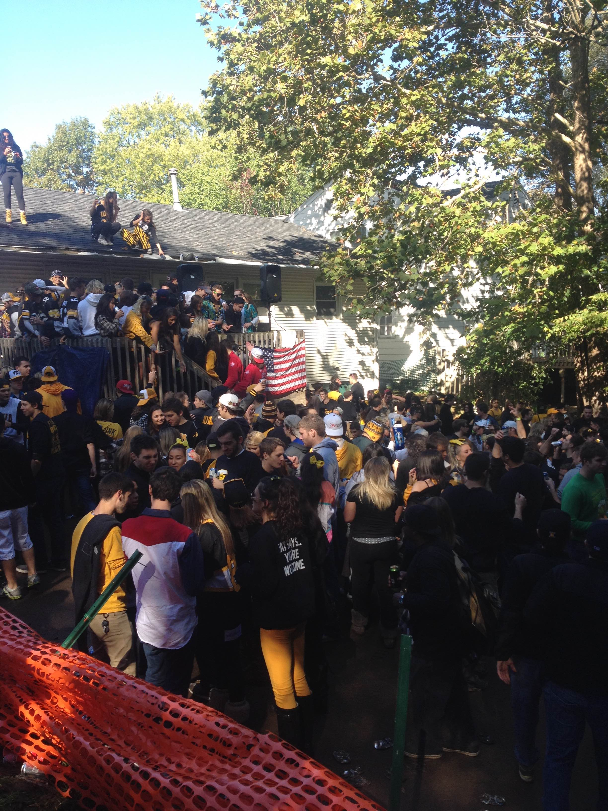
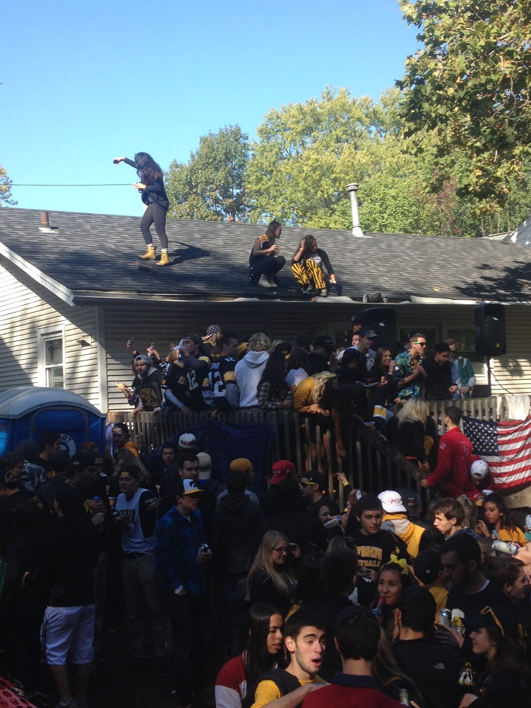
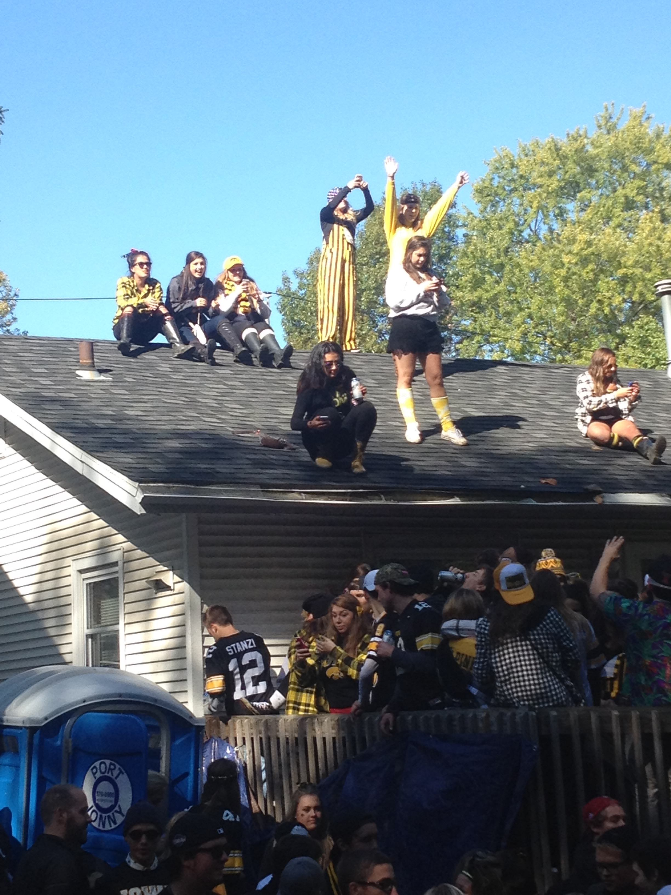
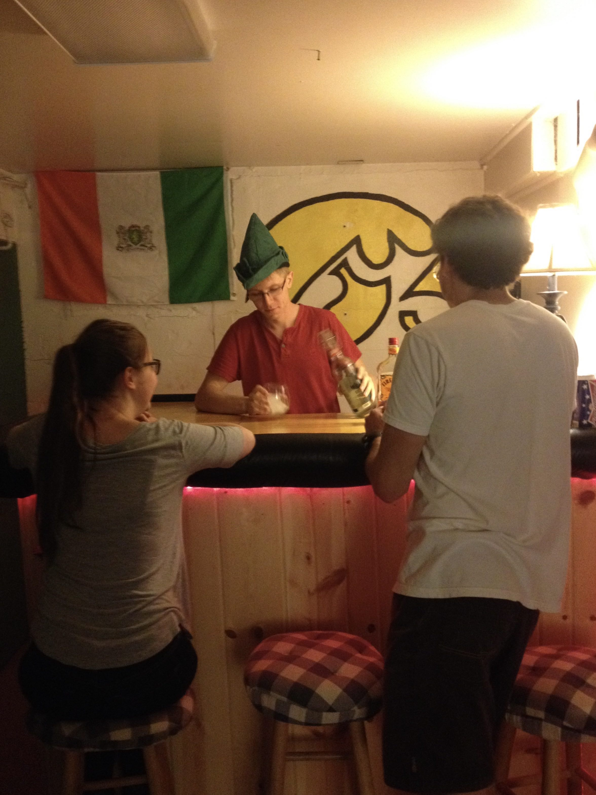
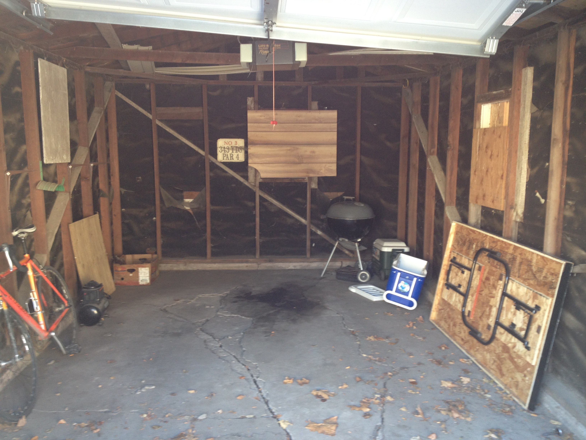
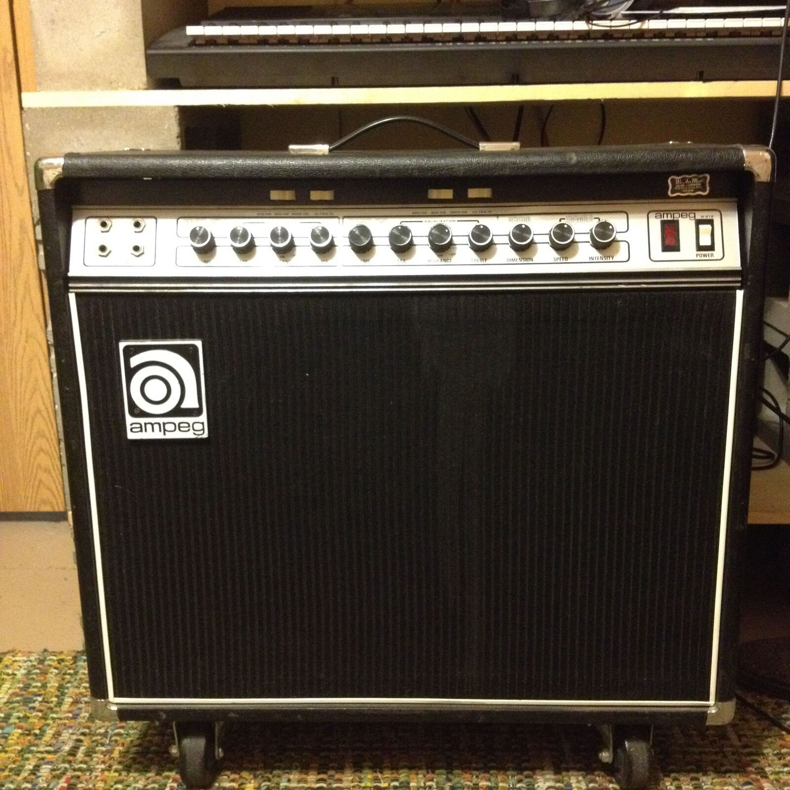

Near Kinnick Stadium on the West side of Iowa City, Melrose House was home to Mike, Ryan, and Jake from 2014 to 2015 - all graduate students from the Iowa physics department. The house is so close to the football stadium that one simply cannot escape the tailgating culture on certain Saturday mornings in the fall. Just have a look at the next-door neighbors:



"If you can't beat 'em, join 'em", as they say. So, Mike, Ryan, and Jake hosted four tailgating events in the fall of 2014:
- The theme for this weekend's tailgating is "homonyms", August 30
- TAILGATING: SALTY DAWGS BRING SALTY SNACKS, September 6
- THE PURGE 3: IOWA VS. IOWA STATE TAILGATING, September 13
- TAILGATING EPISODE IV: EARLY MOURNING REBOOT EDITION , October 11
Jake moved into Melrose House after living at College Green Apt across town for two years. Mike already lived there during the previous year, and Ryan was new to the house along with Jake. In the basement, there was a small bar

With only an electric guitar and an amp, one original song was recorded here. This was T.R. by Juanito Thompson, recorded on a "tape recorder" app on an iPad; not until 2024 was it edited into a track at Irvin House in State College. However, it is very lo-fi and not currently included on any release. Jake was also trying to sing a little bit back then, but he was not very good at it. There is also a Melrose House "tape recording" of him playing & singing a cover of Bunny Ain't No Kind of Rider by of Montreal (also called Eagle Shaped Mirror on a Daytrotter recording).
Though Jake was the only musician living at the house, Judah had an electronic drumset that he had set up in the basement for a while. Jake and Judah would sometimes play guitar and drums, respectively, sometimes playing songs by Juanito Thompson, such as weird things. In retrospect, this was a precursor to Texas Hold'Em Lava Dome, though that would not come to fruition until Jake moved to The Tuna Can after Melrose House. Speaking of THLD, Jake and Stephen first met at Melrose House soon after Stephen started in the physics department in the fall of 2014. This is also where Jake first met Alex, who would later go on to form Audio Sound Paper with Stephen. In fact, both of these introductions happened at a party event held at the house called SINGLES NIGHT, on September 27, where it was all about music singles, dollar bills, and Kraft singles.
There was a collective desire to get a band together around this time, but it was quite difficult to identify a place to practice (loudly). Sebastian, also from the physics department, was another character who was interested in this idea of finding a place to play music. In the back yard of Melrose House was a shed, where bicycles were stored and where spiders dominated the ecosystem. Despite the condition of the shed, Sebastian and Jake seriously considered the idea of converting it into a practice space.

This didn't work out. They also thought about the idea of trying to build some sort of enclosure in the basement for sound proofing. That didn't happen either. Unfortunately, the house was not very conducive to making music, and so the band idea was put on hold. However, things changed when Stephen started having people at his apartment to play music. This led to the formation of Texas Hold'Em Lava Dome, along with Audio Sound Paper, who would later find a home at the Tuna Can.
